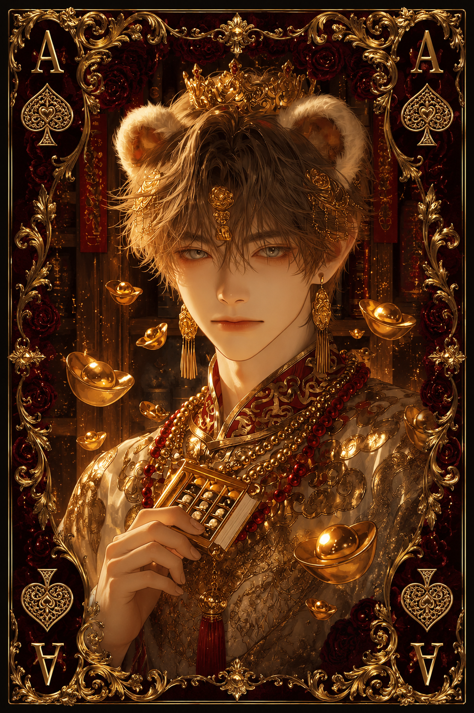

| Race | Brown Bear Hybrid |
| Gender | Male |
| Age | 31 Years |
| Nation | Zythar Ruins |
| Weapon | Golden Earthstaff |
| Magic | Mineral Magic |
Aethan is the reigning king of Zythar, ruler of a nation whose lands contain some of the richest mineral deposits in all of Eryndor. Under his authority, these resources have become one of the foundations of Zythar's wealth, making the kingdom an important source of precious metals, gemstones, and rare materials sought throughout the continent.
Despite his royal status, Aethan is remarkably gentle in temperament. Educated, calm, polite, and naturally kind, he treats both his subjects and foreign visitors with respect. His approachable personality has earned him considerable affection among his people, and he prefers cooperation and peaceful negotiation whenever possible.
Aethan is a brown bear hybrid whose physical strength is complemented by his ability to manipulate minerals and stone. Through Mineral Magic, he can influence the earth beneath him and shape certain mineral formations, while his Golden Earthstaff helps him channel this power with greater precision. Although capable of defending himself, his peaceful nature gives him a very low reputation for danger.
His rule reflects much of his personality. Rather than using Zythar's enormous mineral wealth solely to increase his own fortune, Aethan considers those resources part of the nation's responsibility and future. Beneath his gentle demeanor stands a capable king determined to preserve both the prosperity of Zythar and the trust of the people who placed their future beneath his crown.